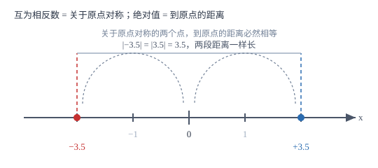

数轴、相反数与绝对值
数轴把「数」变成「位置」：于是相反数是关于原点的对称，绝对值是到原点的距离——两条性质都不是记来的，是看出来的。
| 所属主题 | 有理数 |
|---|---|
| 所属模块 | 代数 |
| 课标学段 | 第四学段（7~9 年级） |
| 前置知识 | 正数与负数、有理数的概念与分类 |
| 核心素养 | 几何直观抽象能力运算能力 |
教材定位
人民教育出版社《人教版（2024版）义务教育教科书·数学》
七年级上册第1章 有理数1.2 有理数及其大小比较
对应七上 1.2 中的数轴、相反数、绝对值三个课时。教材分三课时讲，本篇合成一篇，因为三者的几何解释是同一件事：数轴上的位置、关于原点的对称、到原点的距离。
说明
规定了原点、正方向和单位长度的直线叫数轴。三个要素缺一不可：没有原点就没有基准，没有正方向就分不清左右，没有单位长度就量不出距离。数轴一画出来，数就有了位置——每个有理数都对应数轴上的一个点，而且数轴上右边的数总比左边的数大。反过来要注意：数轴上的点并不都表示有理数，像 π 对应的点就在数轴上，但它不是有理数。
只有符号不同的两个数互为相反数，几何上它们关于原点对称。0 的相反数还是 0，因为原点关于原点对称后仍是原点。若 a、b 互为相反数，则 a+b=0；反过来 a+b=0 也说明二者互为相反数，这是判断相反数最省事的办法。一个数前面有多个符号时，按「奇负偶正」化简：负号每两个互相抵消，剩下奇数个负号结果为负、偶数个则为正，例如 -(-(-3))=-3。
数轴上表示数 a 的点与原点的距离叫 a 的绝对值，记作 |a|。距离不分方向，所以绝对值不会是负数：|a|≥ 0，且 |a|=0 只在 a=0 时成立。正数的绝对值是它本身，0 的绝对值是 0，负数的绝对值是它的相反数。互为相反数的两个数到原点的距离一样，所以 |a|=|-a|。
使用场景
数轴几乎出现在所有后续章节：不等式解集要在数轴上表示，函数图象建立在坐标系上，坐标系不过是两条数轴。现在的画图规范（等距刻度、箭头、原点标注）会一路用到九年级。
绝对值的实际含义是「偏差的大小」：零件尺寸与标准的差、体温与正常值的差、射击成绩与靶心的距离，都只关心差多少、不关心偏高还是偏低，这正是绝对值的用处。相反数则出现在对称问题里：图纸关于中心线对称、天平两边等重、往返路程相同而方向相反。
注意点
三个要素缺一不可，最常见的错误是只画一条带箭头的线却不标原点和单位长度——那样只能看出方向，量不出距离，也无法读数。另外单位长度必须等距，随手画的间距不等的刻度不是数轴。
绝对值等于本身的数不只是正数，还包括 0；绝对值为正数的数有两个，它们是互为相反数的一对。所以「|a|=5」的解是 a=5 或 a=-5，不能只写 5。
化简多重符号时，括号与符号要一起数：-(-(-3)) 一共三个负号，奇数个，结果为负，得 -3。数符号时把最外层那个也数进去，漏数一个就全错。
证明

图 1：互为相反数 = 关于原点对称；绝对值 = 到原点的距离。两条虚线一样长，正是 |3.5|=|-3.5| 的图形理由
证明
结论 1数轴上右边的数总比左边的数大，因为数轴按「越往右越大」的方向构造。
数轴的正方向定为向右，箭头指向右方。以原点为 0，向右每走一个单位长度记 1,2,3,\ldots，向左每走一个单位长度记 -1,-2,-3,\ldots。于是从原点向右走到的点都对应正数，向左走到的都对应负数，且走得越远绝对值越大。因此两个点比较，右边那个数总比左边那个大。
关键一步依据是数轴的构造规则本身：正方向与单位长度把「位置」和「数值」绑在一起，向右为正这一条规定一立，「右大左小」就是必然结果，不需要单独背。
结论 20 是唯一一个相反数等于自身的数；其他数的相反数都与它不同。
设 a 的相反数等于 a 本身，按定义有 a+a=0，即 2a=0，解得 a=0。反过来说，0 关于原点对称后仍在原点，所以 0 的相反数确实是 0。于是除 0 之外，任何数 a 与 -a 分别在原点两侧，位置不同。
关键一步依据是相反数的代数刻画 a+b=0：把「相反数等于自身」翻译成方程，解只有一个，唯一性就得到了证明。
结论 3互为相反数的两个数绝对值相等，即 |a|=|-a|。
数轴上 a 与 -a 关于原点对称，对称意味着原点是它们连线的中点，所以两点到原点的距离相等。按定义，|a| 是 a 到原点的距离，|-a| 是 -a 到原点的距离，两段距离相等，故 |a|=|-a|。分情况验算也一致：a=3 时 |3|=3、|-3|=3；a=-4 时 |-4|=4、|4|=4。
关键一步依据是对称的保距性：关于原点对称不改变到原点的距离，而绝对值就是这段距离，所以两者数值必然相等。
结论 4多重符号化简遵循「奇负偶正」，因为每两个负号合起来正好抵消。
一个数前面加一个负号表示取相反数，加两个负号表示取两次相反数，-(-a)=a，两次相反数回到原数，等于抵消。于是 n 个负号中每两个互相抵消：n 为偶数时全部消完，结果为正；n 为奇数时剩一个，结果为负。例如 -(-(-(-2))) 有四个负号，两对抵消，结果是 2；-(-(-2)) 有三个负号，剩一个，结果是 -2。
关键一步依据是「取相反数两次回到原数」，即 -(-a)=a；这是抵消规则的来源，也是判断奇偶的唯一理由。
动手实验
在一条纸带上画数轴，标出 0 与等距刻度，再沿原点的刻度线把纸带对折。折好后检查哪两个刻度重合：2 与 -2、3.5 与 -3.5 都重合，说明它们互为相反数。接着用尺子量 3.5 那个刻度到 0 刻度的距离，再量 -3.5 到 0 的距离，两段一样长——这就是 |3.5|=|-3.5|，对折一次就能看见。
解题思路
画数轴按四步：先画一条水平直线；在中间偏左处点出原点并标 0；在右端画箭头并注明正方向；从原点向左向右按同一间距画出刻度并标注 1,2,3 与 -1,-2,-3。四步做完再往上放点，放点的方法是「从原点出发，向右为正、向左为负，走几个单位长度就落在哪个刻度」。
求相反数：把符号换掉即可，正变负、负变正，0 不变。遇到多重符号，先数负号个数，奇数个留一个负号，偶数个全部去掉，再写数。求绝对值：先判断这个数本身是正、是负还是 0，正数与 0 直接去掉绝对值符号，负数去掉符号的同时要取相反数。若绝对值里含字母而字母符号未知，必须分类讨论：|a| 在 a≥ 0 时等于 a，在 a<0 时等于 -a。
按场景的例题
例 1（场景：行程与速度） 直跑道上两人的位置与距离
一条东西向直跑道，以出发点为原点、向东为正、每格代表 1 米。甲在 +12 米处，乙在 -8 米处。(1) 甲、乙各自到原点的距离是多少？(2) 两人相距多少米？
解：(1) 到原点的距离就是绝对值：甲在 +12 米处，|12|=12，距原点 12 米；乙在 -8 米处，|-8|=8，距原点 8 米。距离只问远近不问方向，所以乙的距离是 8 米而不是 -8 米。(2) 两人分居原点两侧，中间隔着原点，相距的距离是两段距离之和：12+8=20 米。也可以直接用两点位置相减再取绝对值：|12-(-8)|=|20|=20 米，两种算法一致。
答：(1) 甲距原点 12 米，乙距原点 8 米；(2) 两人相距 20 米。
例 2（场景：测量与工程） 零件直径与允许偏差
某零件标准直径为 20.00 毫米，允许偏差为 ± 0.02 毫米。抽检三个零件，实测直径分别为 19.97、20.01、20.03 毫米。用绝对值判断哪些零件合格。
解：先算偏差（实测减标准）：19.97-20.00=-0.03，20.01-20.00=+0.01，20.03-20.00=+0.03。再看偏差的绝对值是否不超过 0.02：|-0.03|=0.03>0.02，不合格；|+0.01|=0.01≤ 0.02，合格；|+0.03|=0.03>0.02，不合格。第一个零件偏小、第三个偏大，偏差方向相反但都超差，绝对值把它们统一成「超出多少」，判定标准就只有一个。
答：只有实测 20.01 毫米的零件合格。
例 3（场景：图形设计） 关于中心对称的花边纹样
一条花边以数轴原点为对称中心，左右对称布置花位。已确定的花位在 -4 与 +2.5 两处，问它们的对称花位分别在哪里？并写出这三组位置中互为相反数的是哪两组。
解：关于原点对称的两点互为相反数，所以 -4 的对称位置是 -(-4)=4，+2.5 的对称位置是 -2.5。这样四组花位是 -4 与 4、2.5 与 -2.5。检查对称性：|-4|=4=|4|，|2.5|=2.5=|-2.5|，每对到原点的距离相等，图案在原点两侧完全重合。
答：对称花位在 4 与 -2.5；互为相反数的是 -4 与 4、2.5 与 -2.5 两组。
常用推论
由 a+b=0 可直接判定 a、b 互为相反数，这是检验相反数最快的方法，比逐个看符号更可靠。
绝对值的三条性质：|a|≥ 0；|a|=|-a|；|a|=0 与 a=0 互为充要条件。第三条常用来解「绝对值为 0」的方程。
数轴上两点 A(a)、B(b) 之间的距离为 |a-b|，它等于右边点的坐标减去左边点的坐标。这条结论把「距离」和「减法」连了起来。
相反数的相反数是它本身：-(-a)=a。多重符号化简能成立，靠的就是这一条反复使用。
易错点
错认为绝对值等于它本身的数只有正数。
为什么错只想到了「正数的绝对值是本身」，漏掉 0 的绝对值也是 0，而 0 等于它本身。
正确绝对值等于本身的数是所有非负数，即正数与 0。写成式子：|a|=a 等价于 a≥ 0。
错化简 -(-(-3)) 时写成 3。
为什么错数负号个数时漏掉了一个，把三个负号当成两个，于是按「偶正」得正。
正确括号内外一共三个负号，奇数个，结果取负：-(-(-3))=-3。数符号要从最外层数到最里层，一个不漏。
错认为数轴上的每一个点都表示一个有理数。
为什么错把「有理数都能在数轴上找到点」反过来说成「数轴上的点都是有理数」，方向反了——原话成立不等于反过来说也成立。
正确每个有理数都对应数轴上一个点，但数轴上还有很多点不对应有理数，例如 π 对应的点。这条缺口正是后面学无理数的入口。
直观理解
把数轴想成一条走廊，原点是你站的位置。往右走是正数，往左走是负数，走几步就是几。相反数就是走廊对面、和你离得一样远的那个人；绝对值就是你到原点要走的路程，路程没有「负的」，所以绝对值永远不为负。至于 -(-(-3))，可以想成「转身」：转一次面向反面，转两次回到正面，转三次又面向反面。